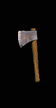
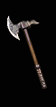
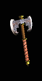
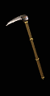
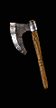
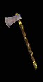
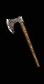
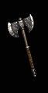
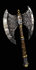
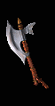

| |
普通斧头
(扩展斧头 | 精华斧头 | 英文版资料)
虽然有些人认为斧头的速度慢也很笨重, 但是它那可怕的力量无法匹敌. 斧头, 从能快速挥动的单手斧, 到能轻易将身体劈开的双刃斧, 种类非常繁多. 最小的斧头是能投掷的斧头, 野蛮人双手投掷斧头能有效地应付近战和在投掷范围内的敌人.
各角色缩写: Ama = 亚马逊, Asn = 刺客, B = 野蛮人, D = 德鲁依, N = 死灵法师, P = 圣骑士, S = 法师.
单手斧 |
单手伤害 |
力量 |
敏捷 |
范围 |
耐久度 |
凹槽 |
速度 |
Qlvl |

手斧 |
3 - 6
(4.5 平均) |
- |
- |
1 |
28 |
2 |
[0]
Ama, Asn, B, D, N, P - 快速
S - 普通
|
3 |

斧 |
4 - 11
(7.5 平均) |
32 |
- |
2 |
24 |
4 |
[10]
Asn, P - 快速
Ama, B, D,N, S, - 普通
|
7 |

双刃斧 |
5 - 13
(9 平均) |
43 |
- |
2 |
24 |
5 |
[10]
Asn, P - 快速
Ama, B, D, N, S, - 普通 |
13 |

军用锹 |
7 - 11
(9 平均) |
49 |
33 |
2 |
26 |
6 |
[-10]
Asn, P - 极快
Ama, B, D, N, S, - 快速 |
19 |

巨战斧 |
10 - 18
(14 平均) |
67 |
- |
3 |
26 |
6 |
[0]
Ama, Asn, B, D, N, P - 快速
S - 普通 |
25 |
双手斧 |
双手伤害
| 力量 |
敏捷 |
范围
| 耐久度
| 凹槽
| 速度
| Qlvl |

巨斧 |
6 - 13
(9.5 平均) |
35 |
- |
2 |
30 |
4 |
[-10]
D - 极快
N, P, S - 快速
Ama, Asn, B, - 普通 |
6 |

阔斧 |
10 - 18
(14 平均) |
48 |
- |
2 |
35 |
5 |
[0]
D, P, S - 快速
Ama, Asn, B, N - 普通 |
12 |

战斗斧 |
12 - 32
(22 平均) |
54 |
- |
2 |
40 |
5 |
[10]
D - 快速
N, S - 普通
Ama, Asn, B, P - 慢速 |
17 |

卓越之斧 |
9 - 30
(19.5 平均) |
63 |
39 |
3 |
50 |
6 |
[-10]
D - 极快
N, P, S - 快速
B, Ama, Asn - 普通 |
23 |

大斧 |
22 - 45
(33.5 平均) |
70 |
- |
4 |
50 |
6 |
[10]
D - 快速
N, S - 普通
Ama, Asn, B, P - 慢速 |
27 |
|
|